行头行尾
回忆上节课内容🤔
- 上次学了直接跳到开头和结尾
- 最重要的就是
^、$- ^ 到开头
- $ 到结尾
- I
- 相当于^i
- A
- 相当于$a

查找帮助
- 还有什么呢?
- 还是继续在
motion里面- ^ 、$ 之后找
- 还是在左右移动这里面发现有个 f
- 看起来是查找某个字符的样子
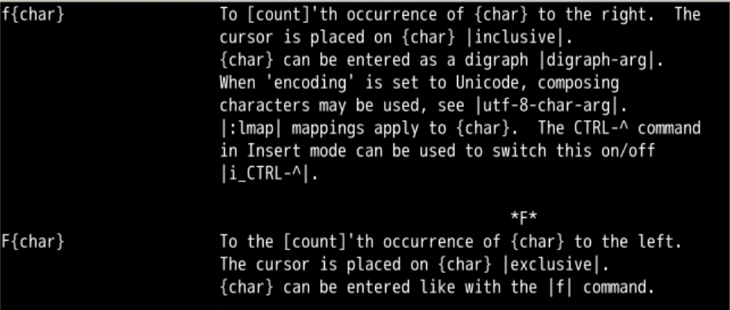
查找字符
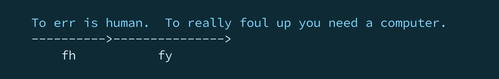
- 看起来就像
- f谁就跳到谁那里
- 我们来试一下
- 先下载个素材
#下载素材
git clone http://gitee.com/overmind1980/oeasyvim.git
# 进入目录
cd oeasyvim
#需要注意这次用无配置文件的方式启动vi
vi -u NONE oeasy.java
行内查找
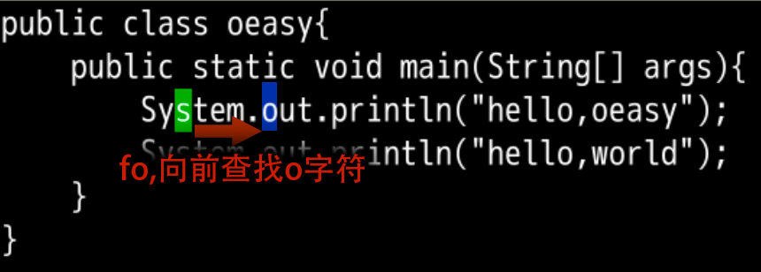
- 通过 fo
- 直接跳到了到了右边邻近的的
o字符 - f 的意思是
find查找- 并让光标跳跃过去
- o 的意思是
- 字符
o - 查的不是别的
- 是字符
o
- 字符
- 前面还有
o- 想要找下一个咋办？
- 还能咋办？
- 查帮助呗！
- 一定在
f附近
继续查找
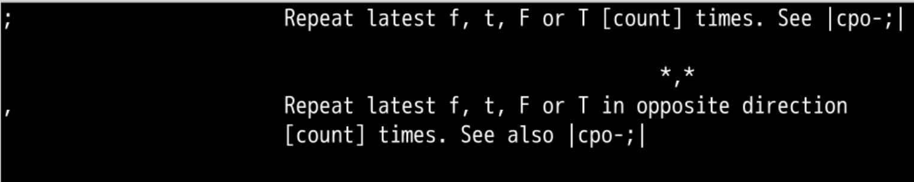
- 帮助说 ;
- 可以让查找继续
动手练习
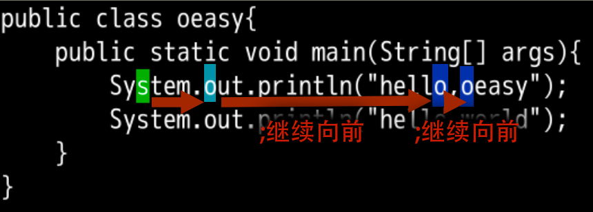
- 好像真的可以
- 小拇指直接落下去就可以
- 查找范围到本行末尾，不能跨行
- 帮助里，还有个和 ; 配对的 , 是干什么用的？
- 试试
反向继续查找
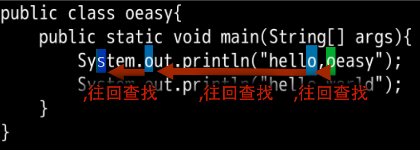
- 中指向下找到 ,
- 确实可以让他反向
- 搜索范围还是被限制在了本行
- 帮助里面还提到的 F 是干什么用的？
反向跳跃
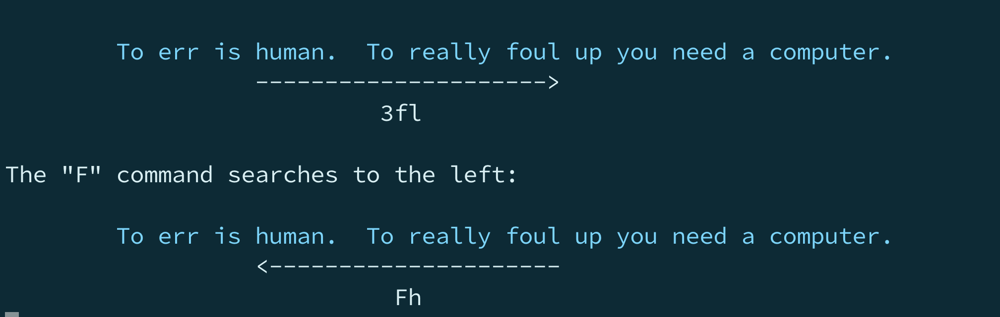
- F 和 f 一样
- 都是行内跳跃
- 但是 F 是反向跳跃
- 往左查找
反向跳跃练习
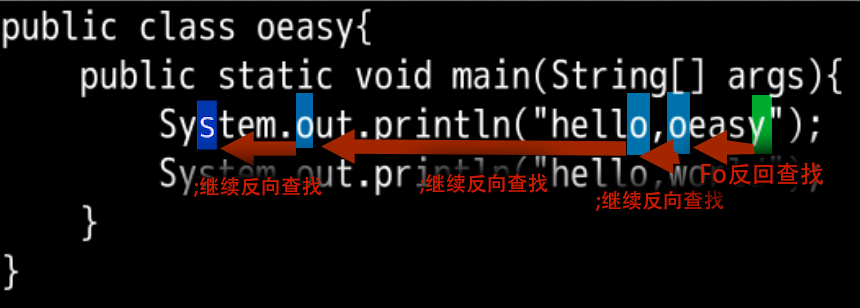
- 这个时候如果 ;
- 就是继续反向查找
- 保持跳跃的方向不变
- 只要是方向不变就是 ;
- 保持小拇指的感觉
- 方向改变的话
- 就是 ,
- 体验中指的感觉
- 帮助里面还提到了
[count]- 这个怎么用
跳跃查找
- 回忆
[count]- 这东西是翻子
- 可以翻倍
3w就是跳跃3个小词4j就是向下4行
- f 2 o 肯定不行
- 因为 f 2 查找到
2字符 - o 下方插入一个空行，并切换到插入模式
- 因为 f 2 查找到
- 2 f o
- 找到第
2个o
- 找到第
- ;
- 保持查找方向不变
- 继续向前
- ,
- 反向查找
o
- 反向查找
- 2 ;
- 保持查找方向不变
- 向前移动到第
2个o
- 2 ,
- 反向查找
- 第
2个o

- 这个;确实很好用
- 但是前提是得要加上参数
- -u None
- 如果在默认情况下进入
默认情况
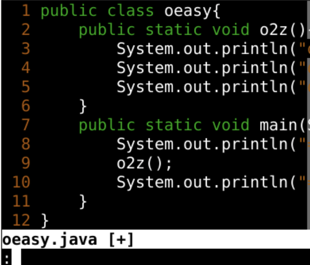
- 一按;
- 就到了命令行模式
映射回来
- 配置文件做了映射
- 把;映射到了:
- 所以;失效了
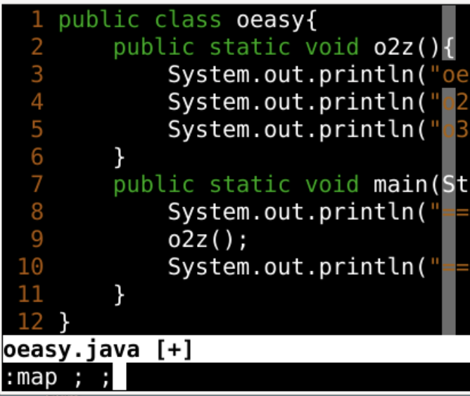
- 映射回来
:map ; ;- 再试试
- ; 、, 的感觉
- 但是每次都要进行映射
:map ; ;
- 好麻烦
找到根源
- 可以修改.vimrc配置文件
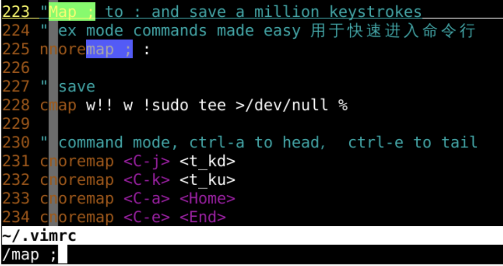
- 225行的问题
- 删除掉之后
- 重开vim就可以了使用;了
总结
- 跳跃
- 向前跳跃是 f
- 向后跳跃是 F
- 继续
- 保持方向是 ;
- 改变方向是 ,
- 可以加上
[count]来加速 - 还有什么好玩的吗？🤔
- 下次再说 👋